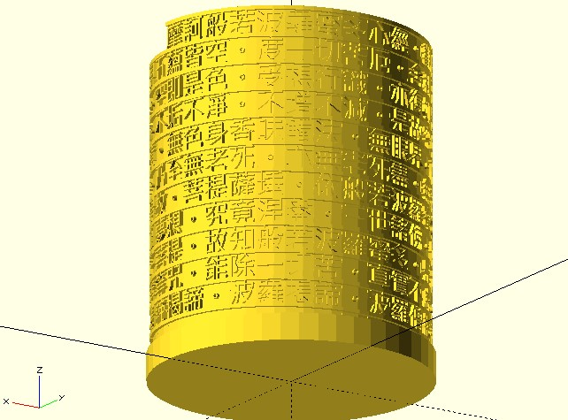

螺旋字塔
March 8, 2022螺絲釘的螺旋路徑怎麼做呢？一邊繞圓、一邊升高就可以了：
use <polyline_join.scad>;
$fn = 36;
radius = 10;
levels = 10;
level_distance = 3;
a_step = 360 / $fn;
l_step = level_distance / $fn;
for(a = [0:a_step:360 * levels]) {
translate([radius * cos(a), radius * sin(a), -a / a_step * l_step])
cube(1);
}
points = [
for(a = [0:a_step:360 * levels])
[radius * cos(a), radius * sin(a), -a / a_step * l_step]
];
translate([radius * 2.5, 0, 0])
polyline_join(points)
cube(1);
這會建立以下的模型：

若將左邊的方塊取代為文字，就可以建立螺旋字塔，這是設計的出發點，因為是參數化建模，接下來你要決定設計哪些參數，然後有彈性地變化文字大小、層高、層數等參數，也就是建立參數間的約束。
參數間的約束
單純只是想建立螺旋路徑的話，dotSCAD 提供了 helix 函式，例如，可以用以下的程式來建立如上圖的模型：
use <polyline_join.scad>;
use <helix.scad>;
$fn = 36;
radius = 10;
levels = 10;
level_distance = 3;
points = helix(
radius = radius,
levels = levels,
level_dist = level_distance,
vt_dir = "SPI_DOWN"
);
for(p = points) {
translate(p)
cube(1, center = true);
}
translate([radius * 2.5, 0, 0])
polyline_join(points)
cube(1, center = true);
接下來就是將左邊的方塊替換為文字，字型大小取決於一圈要有幾個字，如果這由 $fn 決定，那麼就是周長除以 $fn，每一層的高度也會是一個字的高度。
如果想依輸入的文字自動決定層數，可以取得文字數量，除以 $fn 後取整數部份。
文字必須是向外，這可以在擠出文字後繞 x 軸、z 軸各轉 90 度，使得文字面向 x 軸正方向，然後依座標點與 x 軸的夾角，繞 z 軸轉動。
接下來將文字與右邊的螺旋重疊並略作微調（因為相同字型尺寸下，指定的字型實際繪製範圍會不同），讓兩者可以接合。
以上四個步驟是逐步完成，每次會要調整出參數間的約束，具體而言，是調整出 levels、level_distance 等變數與 radius、$fn 參數間的關係，然後每一步要確認達到階段性目標，再繼續往下一步進行。
最後才是完成以下的程式碼：
use <polyline_join.scad>;
use <helix.scad>;
t = "3.141592653589793238462643383279502884197169399375105820974944592307816406286208998628034825342117067982148086513282306647093844609550582231725359408128481117450284102701938521105559644622948954930381964428810975665933446128475648233786783165271201909145648566923460348610454326648213393607260249141273724587006";
$fn = 36;
radius = 10;
thickness = 1;
// 參數與變數間的約束
font_size = 2 * PI * radius / $fn;
level_distance = font_size + thickness;
levels = floor(len(t) / $fn);
points = helix(
radius = radius,
levels = levels,
level_dist = level_distance,
vt_dir = "SPI_DOWN"
);
// 文字螺旋
for(i = [0:len(points) - 1]) {
p = points[i];
a = atan2(p.y, p.x);
translate(p)
rotate([90, 0, 90 + a]) // 依序繞 x 軸、y 軸、z 軸旋轉
linear_extrude(thickness, center = true)
text(
t[i],
size = font_size,
font = "Arial Black",
valign = "center",
halign = "center"
);
}
// 螺旋線
rotate(-180 / $fn)
translate([0, 0, level_distance / 2])
polyline_join(points)
cube(thickness * 1.05, center = true);
這會繪製出以下的模型：
我的〈Text tower〉就是基於以上步驟設計出來的：

螺旋字球
基於類似的設計概念，你也可以建立螺旋字球，例如〈Text sphere〉：
螺旋字球的螺旋路徑，可以基於 dotSCAD 的 sphere_spiral 函式建立，例如以下是個簡單的示範：
use <sphere_spiral.scad>;
points_angles = sphere_spiral(
radius = 40,
za_step = 20,
z_circles = 40,
begin_angle = 900
);
for(pa = points_angles) {
translate(pa[0]) rotate(pa[1])
rotate([90, 0, 90]) linear_extrude(1)
text("A", valign = "center", halign = "center");
}
%sphere(40);
這會建立以下的結果：
如果要建立的螺旋字球不大，使用 sphere_spiral 就足夠了，不過，sphere_spiral 函式建立的路徑，每個點間的距離，越接近赤道會越大，這是因為它實作時，只是單純地基於〈球座標系〉。
極角 φ 越小，投影在 xy 平面的長度越小，旋轉方位角 θ 後的弧長越小；相對地，極角 φ 越大，旋轉方位角 θ 後的弧長越大，這就是越接近赤道的點與點間距離會越大的原因。
想在球上平均分佈點距，除了五個〈柏拉圖立體〉，沒有其他的可能性，只能儘量平均分佈，視需求不同，會有不同的分佈方式，在球上儘量平均地佈點，其實也是一些數學家會研究、探討的題目。
就以螺旋方式排列文字而言，你需要的其實是類似〈阿基米德螺線〉的球面版本，在 dotSCAD 有個 bauer_spiral 函式，可以建立近似平均佈點的螺線。例如：
use <bauer_spiral.scad>;
use <polyline_join.scad>;
n = 200;
radius = 20;
pts = bauer_spiral(n, radius);
for(p = pts) {
translate(p)
sphere(1, $fn = 24);
}
polyline_join(pts)
sphere(0.5);
這會建立以下的結果：
我的作品〈Bauer text sphere〉，就是基於 bauer_spiral 函式，可以應付球面上文字量多的情況，例如心經球：
因為我的作品，都是使用 OpenSCAD 建立，想知道怎麼設計，可以研究一下原始碼，dotSCAD 的 examples 都可以找到作品相對應的原始碼檔案。